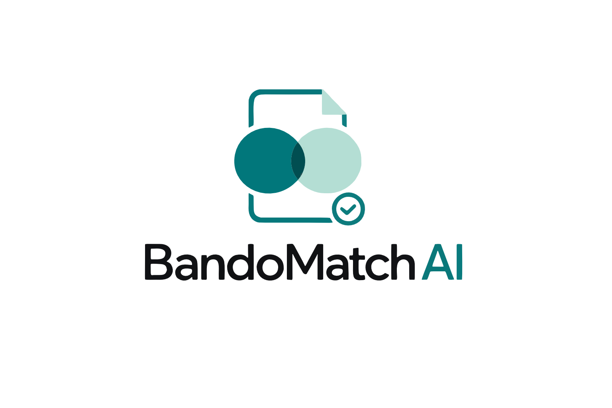

01
Informazioni distribuite
Scadenze, destinatari, ATECO, importi, spese ed esclusioni possono trovarsi in sezioni e allegati diversi.
PDF lunghi, strutture eterogenee, terminologie non uniformi.

Un sistema di pre-screening che trasforma documenti complessi in criteri strutturati, confrontabili e verificabili.
Fonte e PDF sempre disponibili
Un requisito richiede controllo
“Buongiorno, sono Matteo Pizziconi e vi presento BandoMatch AI, il progetto che ho sviluppato per supportare commercialisti e consulenti nella prima analisi dei bandi.”
Leggere è solo il primo passo: bisogna trasformare informazioni disperse in criteri coerenti e riutilizzabili su molti clienti.
Scadenze, destinatari, ATECO, importi, spese ed esclusioni possono trovarsi in sezioni e allegati diversi.
Investimento massimo, finanziamento massimo e contributo a fondo perduto non sono lo stesso dato.
Lo stesso lavoro viene ripetuto per ogni cliente, mantenendo anche una motivazione chiara di compatibilità o esclusione.
La sola ricerca per parole chiave non gestisce sinonimi, eccezioni e relazioni fra requisiti.
“Il problema non consiste soltanto nel leggere un PDF, ma nel trasformarlo in criteri confrontabili per molti clienti.”
Il valore cresce quando lo stesso studio deve confrontare più bandi con una base clienti ricorrente e spiegare le proprie priorità.
Individuano rapidamente i clienti su cui approfondire un’opportunità.
Riducono il tempo del primo controllo e mantengono una traccia delle motivazioni.
Organizzano bandi, fonti e confronti in un flusso unico e consultabile.
“Il target principale è formato da commercialisti, consulenti d’impresa e piccoli studi di finanza agevolata che seguono più clienti.”
Il sistema collega acquisizione, comprensione, controllo, archivio e confronto con i clienti: non è una semplice chiamata a un modello.
PDF locale oppure URL HTTPS pubblico.
Estrazione AI in uno schema comune.
Normalizzazione, evidenze, coerenza e warning.
Matching locale con tutti i profili cliente.
Dashboard, scheda, motivo e PDF originale.
29 campi principali, fonti, evidenze e dati economici distinti.
Ammissibile sui dati disponibili, non ammissibile con motivo, da verificare.
“Il flusso parte da un PDF o da un URL HTTPS e arriva a una scheda confrontata localmente con i clienti.”
Ogni livello ha un compito preciso: interpretare, rendere i dati controllabili, confrontare e infine verificare sulla fonte.
DeepSeek via OpenRouter comprende formulazioni diverse, estrae lo schema e consolida le parti del documento; Claude è il fallback.
Schema, normalizzazione, fonti, evidenze e validazione distinguono date, percentuali, contributi, finanziamenti e investimenti.
Il matching locale calcola lo score — ATECO 40, regione 30, dimensione 20, fatturato 10 — e applica controlli rigidi separati.
Il professionista controlla scadenze, requisiti determinanti e aspetti non presenti nel profilo cliente prima di procedere.
“L’intelligenza artificiale viene usata dove serve comprendere il linguaggio; non esegue il matching e non decide l’ammissibilità legale.”
Un’architettura ibrida: componenti web, AI esterna e regole Python lavorano insieme, con un confine dei dati esplicito.
La parte visibile: dashboard, archivio bandi, clienti e caricamento dei documenti.
Orchestra upload, controlli, validazione, database e matching deterministico.
L’AI interpreta il testo pubblico; database e regole conservano e confrontano i dati.
“Il frontend è una SPA React e TypeScript; FastAPI orchestra estrazione, database e matching.”
Il prototipo applica principi di minimizzazione, sicurezza e controllo umano, ma non dichiara una certificazione GDPR o AI Act.
Il testo pubblico del bando viene inviato al provider AI. Il PDF originale viene conservato per consultazione e download. I dati dei clienti restano nel sistema e il matching viene calcolato localmente.
I dati vengono estratti automaticamente e possono contenere imprecisioni. Scadenze, importi e requisiti devono essere sempre verificati sulla fonte ufficiale prima di essere utilizzati con i clienti.
“Il punto centrale è il confine dei dati: il provider AI riceve il testo pubblico del bando, non i dati dei clienti.”
Le principali difficoltà emerse nello sviluppo hanno prodotto controlli espliciti, fallback e limiti dichiarati.
La prima soluzione poteva perdere le informazioni presenti nelle sezioni finali del documento.
Senza una tabella ATECO, l’AI poteva ignorare divieti discorsivi come tabacco o attività finanziarie.
“Le difficoltà principali non sono state nascoste: sono diventate regole, warning e limiti dichiarati.”
Quattro evoluzioni concrete per trasformare l’MVP in uno strumento pronto a crescere.
Riconoscere il testo anche nei documenti composti esclusivamente da immagini.
Proteggere l’accesso e separare i dati dei diversi studi professionali.
Ridurre automaticamente il peso dei PDF durante caricamento e conservazione.
Ottimizzare chunking, elaborazione parallela e chiamate al modello AI.
“Le prossime evoluzioni renderebbero il progetto più accessibile, sicuro e veloce, mantenendo la verifica professionale.”